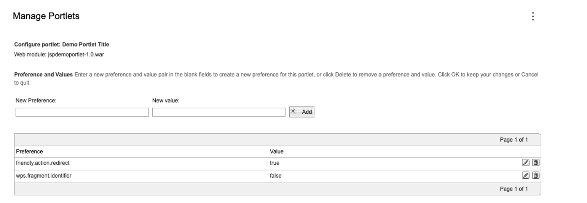

URL Addressability
Overview
Addressing a web-based solution happens via Uniform Resource Locators (URLs). URLs are used by browsers or other software to retrieve published resources on the internet.
HCL DX comes with various features such as Web Content Management, Sites, Digital Asset Manager, API layers, and more. Each of them allows addressing the different artifacts with URLs. You can also customize the URLs produced by your site (for example, to change the context root, to optimize for Search Engines, or to shorten the URL).
When developing a site, different APIs allow you to generate URLs to address the different artifacts. When accessing APIs remotely, different URLs can be used to explore the REST-based APIs using API explorers.
This document outlines on a high level the different ways you can use and customize URLs with HCL Digital Experience (DX). This page has links to more detailed documents for more in-depth information.
URLs control how you access different sites, pages, components, and content that make up your site. There are various configuration options to tailor URLs to your needs and achieve a good Search Engine Optimization.
DX Artifacts and how to address them
When accessing the UI of DX, a site, historically called Portal, is being rendered. The site can render different pages and portlets or other applications on those pages. The applications can be web content rendering portlets, script applications, the DAM user interface, Personalization rules, and more.
The default URL for a site is https://mydxsample.hcl.com:443/wps/portal/[virtual-portal-context]/rootpage/childpage/[content]/[state]?query-params#anchor. The following list describes the different parts of the URL:
- The protocol can be http or https.
-
The hostname can be configured as needed.
Note
A virtual Portal can have a different hostname. See Virtual Portal URLs.
-
The /wps/portal context root can be customized or completely removed.
-
The virtual-portal-context can be leveraged to address a virtual portal.
-
Pages can be addressed with friendly names and WCM Content can be targeted as well.
-
The state information is leveraged to store render parameters, history, and other data.
-
Query parameters can be leveraged for passing additional parameters such as an anchor to address areas on the page or some state information for an SPA based on hash routing.
Authentication
Typically, the authenticated URL is different from the URL for anonymous access. This allows better caching and higher security. Using the default sample URL https://mydxsample.hcl.com:443/wps/portal/[virtual-portal-context]/rootpage/childpage/[content]/[state]?query-params#anchor, instead of /portal, the authenticated URL contains /myportal. This can be customized. Note that while the anonymous URL context can be completely removed, an authenticated URL context is required.
For more information, see Properties File: wkplc_comp.properties
Generating Portal URLs
Generating Portal URLs correctly is one of the most important tasks in programming an HCL DX based application. There are several programming tools and techniques available for generating HCL DX URLs in custom code.
For more information, see Generating Portal URLs.
Virtual Portals
Virtual portals are beneficial if you want to serve multiple user groups by separate virtual portals for different purposes, but you still want to keep your environment simple and limited to a single HCL DX installation. Virtual portals allow a large extent of scoping and separating portal resources, user groups, and administration.
Virtual Portals can be addressed either with a context root or a hostname to avoid the context root in the URL.
For more information, see Virtual Portal URLs.
Removing State
DX state URLs have a complex structure and include a large compressed and encoded XML Navigation State document. The stream of random characters in a DX Site URL is the Navigation State document. Full function depends on correctly maintaining this Navigation State document during all the operations a user might perform in Portal. The state can be removed for different use cases to get a cleaner URL.
For more information, see Changing your site URL.
Friendly Action URLs
Starting from CF216, you can configure action URLs to be friendly.
While DX allows for friendly URLs, actions in portlets still trigger state information for bookmarkability and caching, therefore making the URLs unfriendly. See the following examples:
-
Sample friendly URL:
http://localhost:10039/wps/myportal/Home/portlet1 -
Sample URL after action:
http://localhost:10039/wps/myportal/Home/unfriendly/!ut/p/z1/04_Sj9CPykssy0xPLMnMz0vMAfIjo8ziAxwtPA3cgw2MLZ3cDQzMHD3CvN2d_Y0MvM31w8EKDFCAo4FTkJGTsYGBu7-RfhTp-pFNIk4_HgVR-I0P14_CogTVB4TMKMgNDY0wyHQEAEtOCvU!/p0/IZ7_PA8I0GS039BG006AHVKGCO20S4=CZ6_PA8I0GS039BG006AHVKGCO20K7=LAtx3bXcr9g6G_9FFNzVJLrplxI0xbgzLlX5VqJmm77IT6cSS0g=/#Z7_PA8I0GS039BG006AHVKGCO20S4
A new configuration option is available where you can redirect a URL after action execution to a friendly URL. When enabling this feature, it is assumed the session or other means are used to store the information about the view to show. You can set up the configuration using a feature flag as portlet metadata. This can be configured per portlet.
Note
The feature is only active if friendly URLs are enabled and theme is enabled for friendly URLs.
To enable this feature:
- Go to the Manage Portlets page.
- In the New Preference field, enter friendly.action.redirect.
- In the New value field, enter true.
- Click Add.

To disable this feature, you can perform any of the following actions:
- Delete the friendly.action.redirect preference with the true value.
- Edit the value of the friendly.action.redirect preference to false.
No restart is required for both enabling and disabling this feature.
Friendly Names
Friendly URLs have human-readable strings in the URL that describe the path to a Portal page.
For more information, see Portal URLs.
Vanity URLs
You can associate vanity URLs with portal pages and labels. Vanity URLs are short URLs that people can easily remember.
For more information, see Vanity URLs.
Friendly Content URLs
Instead of having a different page for each piece of content, the same page and content viewers can be leveraged to address a large set of different content and still maintain friendly URLs.
For more information, see Friendly Web Content Viewer URLs.
Project URLs
Projects are reflected in the URL when working on an active project.
For more information, see Project URL generation.
Other artifacts in DX
Web Content Manager resources
WCM Content, components, Site Areas or other artifacts can be addressed via the REST API (headless) or via the WCM Servlet.
-
For information on servlet rendering, go to Access web content by using a servlet.
-
For information on the REST API, see Friendly Web Content Viewer URLs.
-
For information on how to leverage the API explorer to discover the WCM REST API, see URLs for API Access.
-
For information on how to write links to web content that are to be used with the web content viewer or the Web Content Manager servlet, see Generating WCM URLs.
DAM resources
DAM assets and collections can be accessed via the API and in the API with different endpoints. A custom URL and friendly URL both allow some form of customization of the URLs.
-
Default URL: https://mydxsample.hcl.com:443/dx/api/dam/v1/collections/[collectionID]/items/[assetID]/renditions/[renditionID]?binary=true
-
Friendly URL: https://mydxsample.hcl.com:443/dx/api/dam/v1/collections/[collectionName]/items/[assetName]/renditions/[renditioName]?binary=true
-
Custom URL: https://mydxsample.hcl.com:443/dx/api/dam/custom/[custom]
POC URLs
A Piece-of-content URL or PoC URL is a late binding mechanism that targets content instead of DX artifacts such as pages. PoC URLs use a different URL entry point into HCL DX (typically mypoc or mycontenthandler instead of myportal). A programming API is available for working with Piece-of-Content URLs.
API Explorers
DX provides a rich set of REST APIs that also bring API explorers along to explore and try the APIs.
For more information, see URLs for API Access.
J2EE resources
Underlying HCL DX is the IBM WebSphere Application Server, a powerful J2EE server. The features of a J2EE server for addressing resources can also be leveraged (for example, when deploying a theme EAR file, the resource URLs can be chosen within the realm of the J2EE specifications).